Design de protocolos
Slides1 Design de protocolos
1.1 Design de protocolos
A área de design de protocolos (protocol design) é possívelmente onde métodos formais que usam model checking, como Quint e TLA+, mais tem valor.
1.2 Protocolos
Já vimos alguns exemplos de protocolos:
- Entregar a prova de cabeça pra baixo e pedir que todos desvirem no
mesmo momento é uma forma de garantir que todos tem o mesmo tempo de
prova
- Na decolagem/pouso de um avião, precisamos abrir as janelas e
levantar as mesinhas
- Sistemas de trocas em jogos ou, semelhantemente, sistemas de pagamento estilo mercado pago
1.3 Suposições (Assumptions)
Uma suposição é algo que é aceito como verdadeiro, sem provas.
Suposições são extremamente importantes para protocolos, e é necessário fazê-las explícitas.
- Quando alguém for implementar esse protocolo, deve garantir que as suposições valem para seu ambiente também
1.4 O que precisamos assumir nos nossos exemplos? - Provas
Entregar a prova de cabeça pra baixo e pedir que todos desvirem no mesmo momento é uma forma de garantir que todos tem o mesmo tempo de prova
- Assumimos que alunos não conseguem ler as questões de uma folha de
papel virada.
- Assumimos que os alunos são vão desobedecer e desvirar antes da
hora
- Assumimos que alunos não conseguem ler as questões de uma folha de
papel virada.
1.5 O que precisamos assumir nos nossos exemplos? - Aviões
Na decolagem/pouso de um avião, precisamos abrir as janelas e levantar as mesinhas
- Nesse caso, o protocolo não é suficiente para garantir que os
passageiros sobrevivam à uma emergência.
- É uma medida de prevenção, não uma garantia.
- Para que fornecesse uma garantia, teríamos que assumir que estar com
as janelas abertas e mesinhas levantadas faça com que todos os
passageiros possam desembarcar com segurança em qualquer emergência - o
que não é verdade.
- Nesse caso, o protocolo não é suficiente para garantir que os
passageiros sobrevivam à uma emergência.
1.6 O que precisamos assumir nos nossos exemplos? - Trocas
Sistemas de trocas em jogos ou, semelhantemente, sistemas de pagamento estilo mercado pago
- Assumimos que uma pessoa não pode fazer escolhas pela outra
- Cada um só tem acesso e controle de sua própria conta
- Assumimos que uma pessoa não pode fazer escolhas pela outra
2 Problema dos dois generais
2.1 O problema dos dois generais - Contexto
Com imagens de (BROWN, 2022)
- 2 generais e seus exércitos acampam em montanhas ao redor de uma
cidade inimiga
- O único jeito dos generais comunicarem entre si é enviando
mensageiros
- Os mensageiros podem ser capturados pelo inimigo sem que os generais
saibam!
- Os mensageiros podem ser capturados pelo inimigo sem que os generais
saibam!
- Para que a batalha seja vencida, os dois precisam atacar ao mesmo tempo. O ataque de um deles não é suficiente.
2.2 O problema dos dois generais
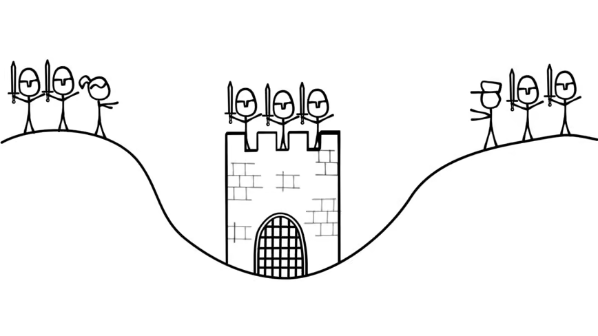
2.3 O problema dos dois generais - protocolo
Como podemos definir um protocolo de troca de mensagens que garanta que ambos ataquem juntos?
2.4 Primeira mensagem
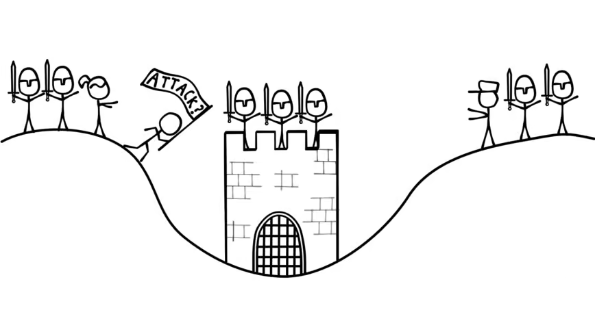
2.5 Segunda mensagem
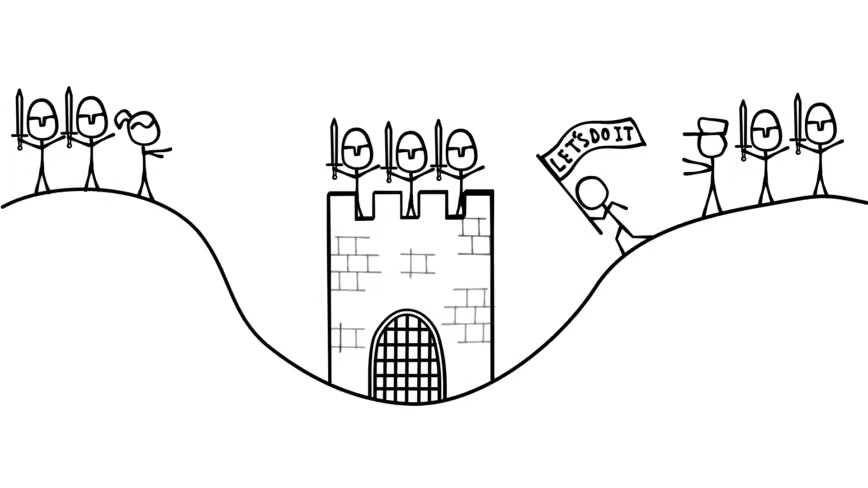
2.6 Terceira mensagem
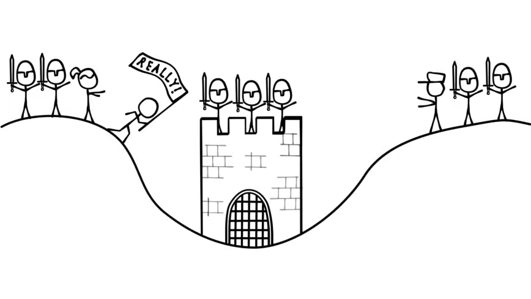
2.7 Quarta mensagem
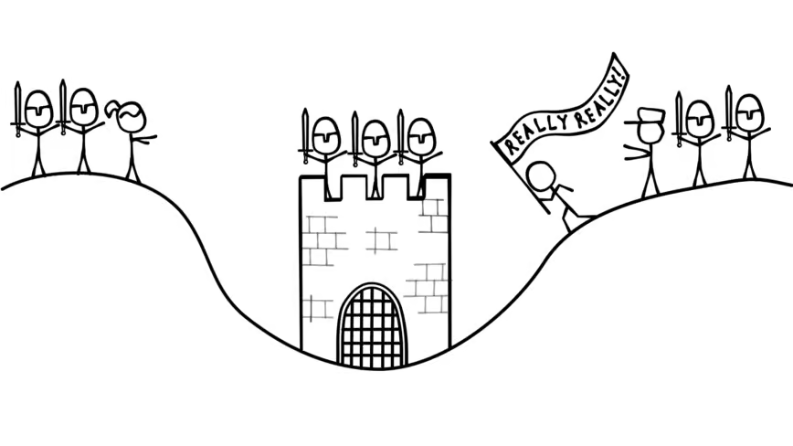
2.8 Tentando algo como TCP/IP
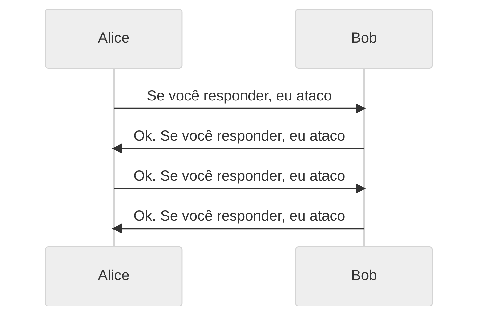
2.9 Dois generais - Impossibilidade
O problema dos dois generais não tem solução!
- O melhor que podemos fazer é uma solução estatística: Envio uma mensagem de atacar amanhã as 9:00 e vou mandando mais mensageiros de hora em hora até receber uma confirmação.
3 O problema dos generais bizantinos
3.1 Histórico e motivação
Introduzido por Lamport em (LAMPORT; SHOSTAK; PEASE, 1982)
- sim, o mesmo Lamport criador de TLA+, uma década antes dele criar o TLA+.
Um sistema de computadores confiável deve ser capaz de lidar com a falha de um ou mais de seus componentes. Um componente com falhas pode ser capaz de enviar informações conflitantes para diferentes partes do sistema.
- Lidar com esse tipo de falha é definido de forma abstrata pelo
problema dos generais bizantinos
- A capacidade de lidar com esse problema é chamada de Byzantine Fault Tolerance (BFT).
Recurso em vídeo: (COLOHAN, 2016)
3.2 O problema dos generais bizantinos
Várias divisões do exército bizantino estão acampadas ao redor de uma cidade inimiga, cada divisão é comandada por um general.
- Os generais se comunicam entre si somente através de
mensageiros
- Após observar o inimigo, eles devem decidir um plano de ação (i.e.
atacar ou recuar)
- Assim como no problema dos dois generais, um ataque com poucas
divisões pode falhar
- Assim como no problema dos dois generais, um ataque com poucas
divisões pode falhar
- Alguns generais podem ser traidores!
- Traidores querem impedir os generais leais de entrarem em acordo sobre o plano de ação
Precisamos de um algoritmo que garanta:
- A: Todos os generais leais devem decidir o mesmo plano de ação
- B: Um pequeno número de traidores não podem fazer com que os generais adotem um plano de ação ruim
3.3 Ilustração
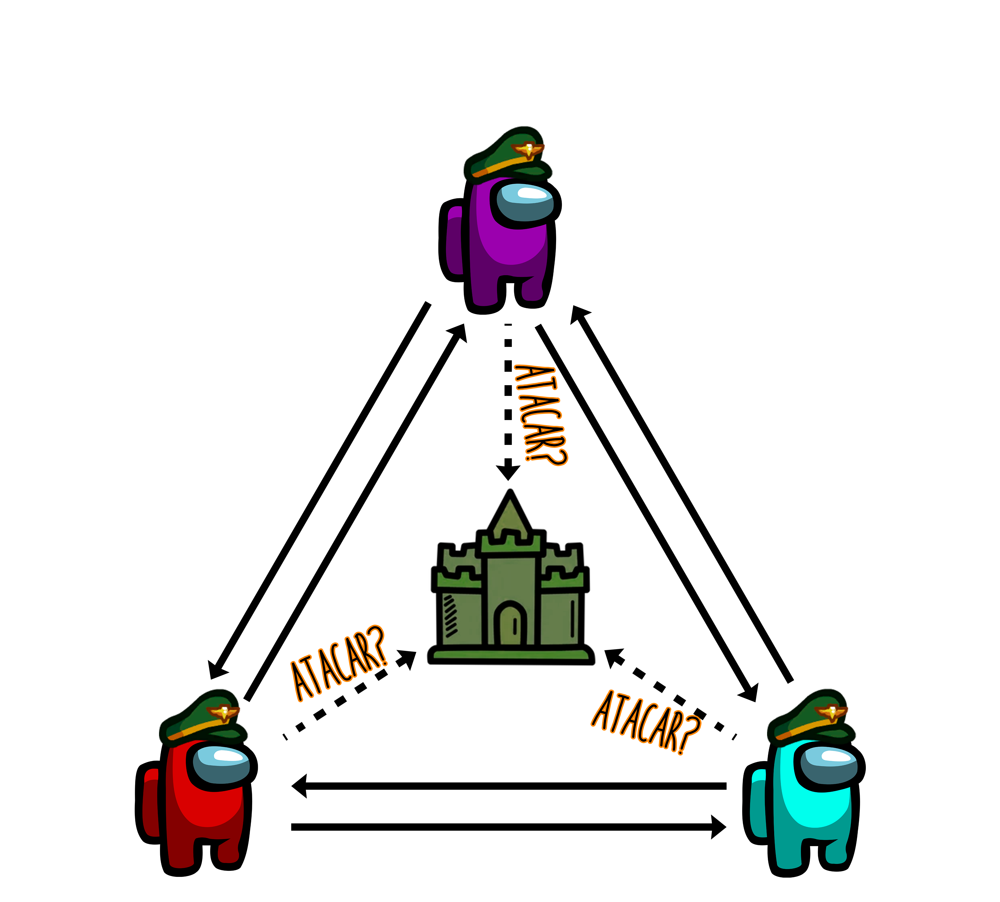
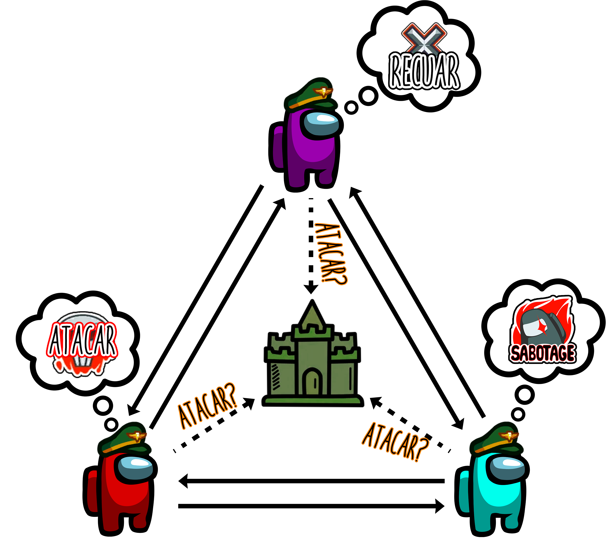
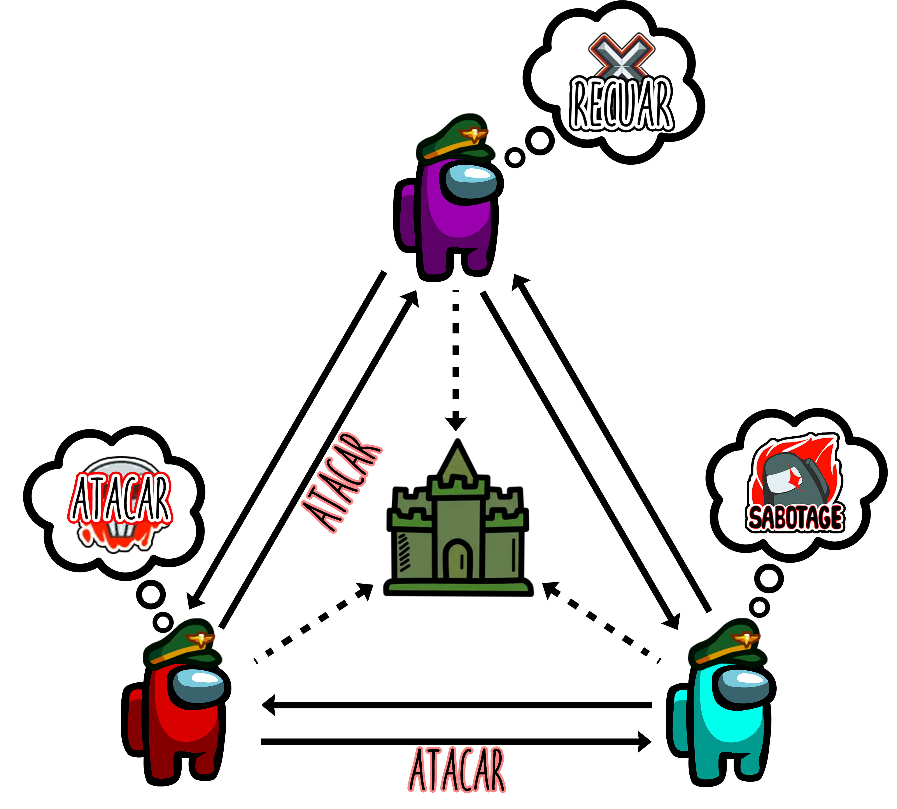
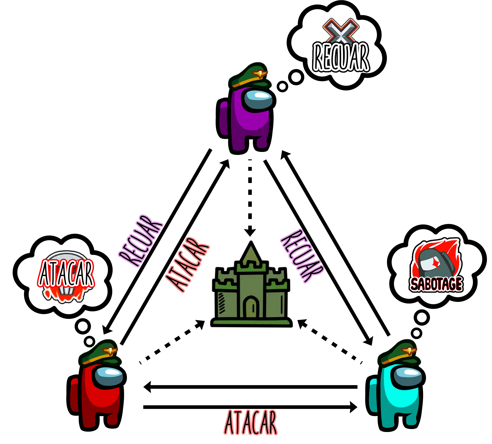
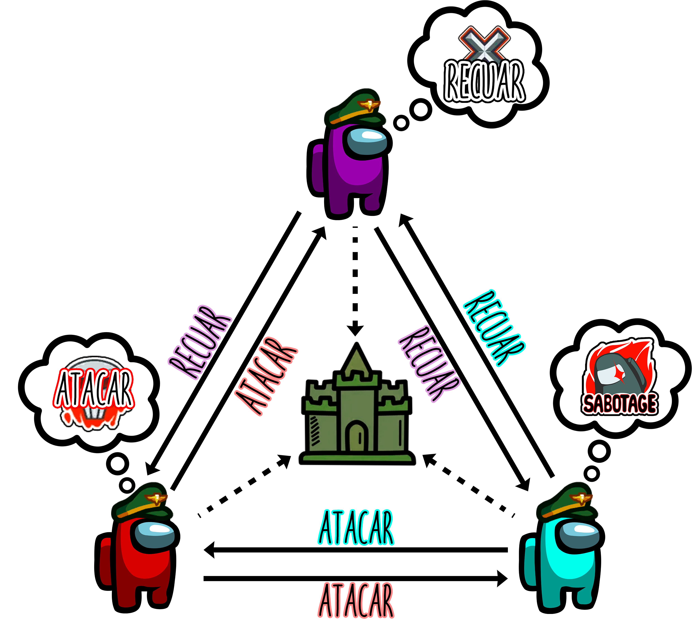
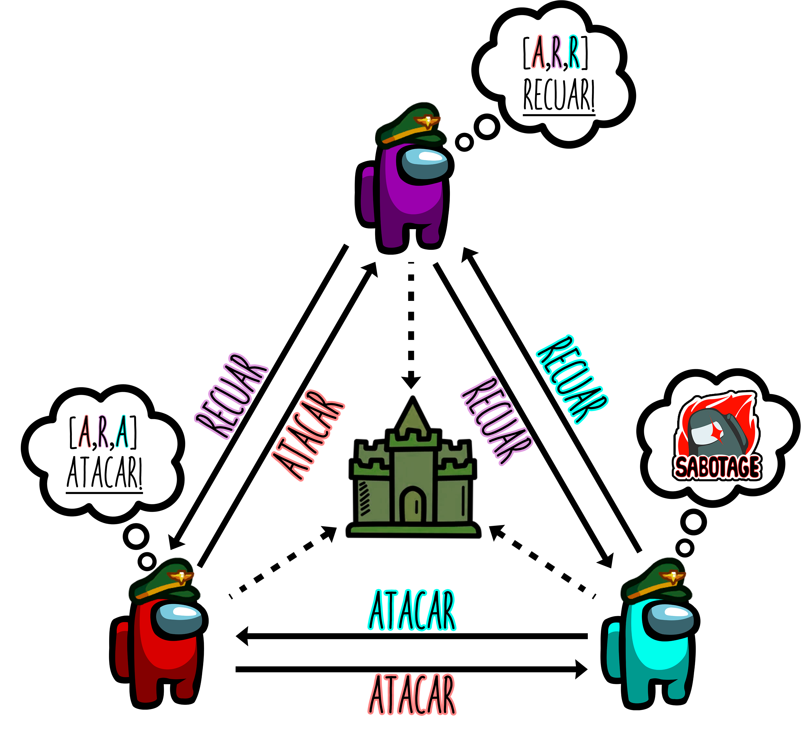
3.4 Impossibilidades
Mesmo se os generais leais souberem que há um traidor, não há como determinar qual mensagem vem de um traidor.
Segundo (LAMPORT; SHOSTAK; PEASE, 1982), mesmo que o problema pareça simples, sua dificuldade é indicada pelo fato de que, se os generais puderem apenas enviar mensagens orais, nenhuma solução funciona sem que mais de 2/3 dos generais seja leal.
- Nenhuma solução com menos de \(3m +
1\) generais no total consegue lidar com \(m\) traidores.
- Prova por contradição, mostrando que se houvesse uma solução pra esse caso, poderíamos usá-la para resolver a instância com três generais, o que é impossível.
Se considerarmos mensagens assinadas (i.e. com criptografia) que não podem ser forjadas, o problema se torna mais simples e temos solução para o caso de três generais.
3.5 Modelos com diferentes parâmetros
Quando tempos esse tipo de dependência do comportamento em uma suposição, é interessante checar/simular nosso modelo com diferentes parâmetros, que obedecem ou não a suposição.
module TendermintModels {
import TendermintTest(
Corr = Set("p1", "p2", "p3"),
Faulty = Set("p4"),
// ...
) as n4_f1 from "./TendermintTest"
import TendermintTest(
Corr = Set("p1", "p2"),
Faulty = Set("p3", "p4"),
// ...
) as n4_f2 from "./TendermintTest"
import TendermintTest(
Corr = Set("p1", "p2", "p3"),
Faulty = Set("p4", "p5"),
// ...
) as n5_f2 from "./TendermintTest"
}
3.6 Relação com nosso trabalho 1
No trabalho 1, podemos garantir que os personagens sempre sobrevivem se houver um único inimigo.
- Poderíamos tentar encontrar o número mínimo de inimigos para que os personagens sempre morram.
Assim, nosso protocolo (estratégia) para o trabalho funciona para batalhas contra um inimigo.
- O fato de haver apenas um inimigo é uma suposição
- Se formos apresentar esse protocolo (estratégia) para alguém,
precisamos deixar clara essa suposição
- Simular/checar o protocolo (estratégia) em um ambiente onde a suposição não é satisfeita nos ajuda a entender por que ela existe.
3.7 Relações do trabalho 1 com sistemas distribuídos
- Inimigos são como generais bizantinos.
- Podemos controlar o que os personagens fazem, mas não podemos
controlar os inimigos.
- Não podemos assumir que generais bizantinos estão seguindo um
protocolo, assim como não podemos assumir que inimigos seguem uma
estratégia.
- Podemos controlar o que os personagens fazem, mas não podemos
controlar os inimigos.
- Protocolos funcionam a partir de suposições, como a suposição de que
há somente um inimigo.
- Até 1 inimigo, propriedade garantida
- 2 ou mais inimigos, propriedade não é garantida
- Até 1 inimigo, propriedade garantida
- Em muitas situações, um protocolo deve funcionar independentemente
da ordem de chegada das mensagens.
- Assim como a estratégia do trabalho deve funcionar para todas as
possíveis ordens (iniciativas).
- Assim como a estratégia do trabalho deve funcionar para todas as
possíveis ordens (iniciativas).
- Em protocolos, é comum identificarmos um "caminho feliz". Uma ordem
em que as coisas acontecem onde não é necessário usar as partes mais
complicadas do protocolo.
- No nosso jogo, a ordem "bardo, necromante, sacerdote, monstro" é um
caminho feliz.
- No nosso jogo, a ordem "bardo, necromante, sacerdote, monstro" é um
caminho feliz.
- Em muitos (senão todos) protocolos de sistemas distribuídos, temos
timeouts: ações que são disparadas após certo tempo para
previnir problemas como deadlocks por mensagens perdidas.
- Esses timeouts são parecidos com o ritual do inimigo no nosso trabalho: ou as coisas acontecem dentro de um certo tempo, ou a ação tomada será aquela do timeout (todos os personagens morrem).
4 Consenso
4.1 Consenso
De forma mais geral, esses são problemas de consenso.
Não fiz figurinhas pra esse, vamos ver as imagens do vídeo da Heidi Howard pro Computerphile (HOWARD, 2016).